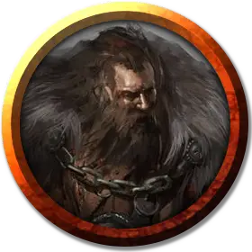

Сэр Урсас
Sir Ursas
Средний Гуманоид (Человек), законно-злой, именной НИП

Класс Доспеха 20 (латы)
Хиты 112 (15к8 + 45)
Скорость 30 футов
| мод | спас | ||
|---|---|---|---|
| СИЛ | 18 | +4 | +7 |
| ЛОВ | 15 | +2 | +5 |
| ТЕЛ | 16 | +3 | +6 |
| мод | спас | ||
|---|---|---|---|
| ИНТ | 10 | +0 | +0 |
| МДР | 12 | +1 | +1 |
| ХАР | 15 | +2 | +2 |
Навыки Атлетика +10, Запугивание +5
Сопротивление урону огонь
Чувства пассивное Восприятие 11
Языки Общий, Инфернальный
Опасность 5 (1800 опыта)
Бонус мастерства +3
Особенности
Специальное снаряжение. Сэр Урсас носит кольцо защиты разума [ring of mind shielding] и латы сопротивления огню [armor of resistance].
Храбрый. Сэр Урсас совершает с преимуществом спасброски от испуга.
Бугай. Рукопашное оружие наносит одну дополнительную кость урона, когда сэр Урсас наносит им удар (учтено в его атаке).
Действия
Мультиатака. Сэр Урсас совершает три рукопашные атаки или две дальнобойные атаки.
Коготь. Рукопашная атака оружием: +7 к попаданию, досягаемость 5 футов, одна цель. Попадание: 11 (2к6 + 4) рубящего урона.
Копьё. Рукопашная или дальнобойная атака оружием: +7 к попаданию, досягаемость 5 футов и дальность 20/60 футов, одна цель. Попадание: 11 (2к6 + 4) колющего урона или 13 (2к8 + 4) колющего урона, если используется двумя руками для рукопашной атаки.
Удар щитом. Рукопашная атака оружием: +7 к попаданию, досягаемость 5 футов, одно существо. Попадание: 9 (2к4 + 4) дробящего урона и если цель — существо Среднего или меньшего размера, она должна преуспеть в спасброске Силы Сл 15, иначе будет сбита с ног.
Реакции
Парирование. Сэр Урсас прибавляет 3 к КД против одной рукопашной атаки, которая по нему попадает. Для этого он должен видеть нападающего и быть вооружённым рукопашным оружием.